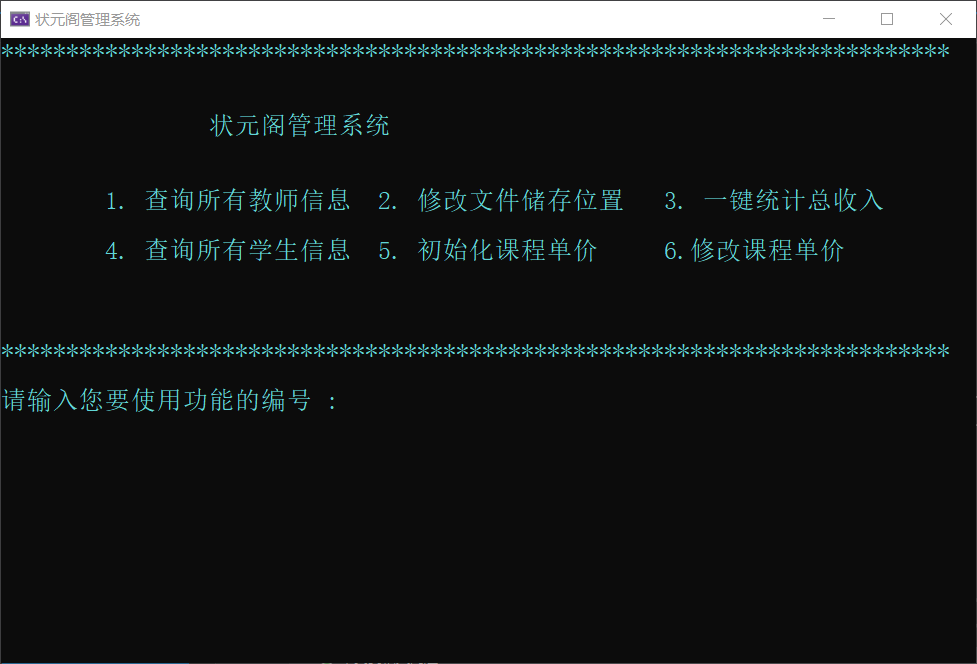

`
南京航空航天大学
《程序设计课程设计》报告
状元阁管理系统
班级 1619103
学号 161910322
姓名 潘佳辉
指导教师 郑洪源
完成日期 2020年5月20日
状元阁坐落于河北省滦州市，创立于2019年夏，是由沈俊东(大连理工大学)、李品桥(清华大学)等河北衡水第一中学优秀毕业生牵头创办的高中生课外辅导机构。自机构成立以来，得到一众高中学生和家长的一致认可，状元阁在当地广受好评。去年暑假，成立之初的状元阁便取得营业额30万元的佳绩。
作为机构任课教师，我有能力和义务用所学的专业知识为状元阁添砖加瓦。
适逢在大一下学期学习了《C++程序设计》这门课程，让酷爱编程学习的我得到一个展示自己的机会，在课程设计布置任务之初，我便决定为状元阁开发一个实用、高效、安全的管理系统，虽然这个设计的出发点远远没有其他同学的宏大雄伟，但是经过一系列的测试，此系统的可靠性和可拓展性是非常不错的。
此外，开发状元阁管理系统的工作量还是比较大的，截止到2020/5/19，有效代码量已经超过了10000行，值得一提的是，在当前的版本中，有些程序的接口虽然没有被用到，但这些接口为以后的版本更新和增减新功能提供了极大的便利，这也体现了此次开发管理系统是从实际出发的特点，所有功能和设计都为满足现有或者未来的的用户需求。
总结一下就是状元阁管理系统是从实际的需求出发，开发出的一款实用性、可拓展性都很强的管理系统。
`
以下灰色部分为尚未实现的功能
对于学生
对于教师
对于管理人员
对于经营者
系统功能大致可分为四个模块，分别是增加模块、查询模块、修改模块、管理模块，操作的对象有学生、教师、课表、记录、课程价位等。
VisualStudio简介
Visual Studio 集成开发环境是一种创新启动板，可用于编辑、调试并生成代码，然后发布应用 。 集成开发环境 (IDE) 是一个功能丰富的程序，可用于软件开发的许多方面。 除了大多数 IDE 提供的标准编辑器和调试器之外，Visual Studio 还包括编译器、代码完成工具、图形设计器和许多其他功能，以简化软件开发过程。
为什么选用VS2019
在设计之初，我原本想用我熟悉的轻量级编辑器 Visual Studio Code 作为开发环境，在写了程勋进行到一定程度的时候，我发现没有IDE的开发是很耗费精力的，没有自动生成的文件夹和筛选器让文件的管理变得异常困难，因此我选用了强大的IDE Visual Studio 2019 社区版，为软件的调试和管理提供了很大的便利。另外，VS支持打开和编辑Qt工程，日后增加图形化界面不必再转为选用其他的IDE
介绍类前的一些说明
在设计之初，我本想按照往年的课程设计的模板(比如图书馆管理系统)来进行类的设计，用一些名词作为Class，然后其中添加方法，这样一来程序的主体部分还是程序的主函数(或者其他的功能性函数)。但考虑到此次选题各种的功能需求比较复杂，并且初学编程的我没有把这个系统功能分解为几十上百个函数的能力，我努力的使用完全面向对象的思想，类似于Java的一切皆是类的思想。 现在返回来看当时类的设计，确实有很多的缺点和不足，甚至曾经出现了头文件循环包含的问题。这里类的说明会有一些比较难理解的地方，我会尽我最大努力把的当初的设计思想展现出来。
友情提示 此部分容量较大，阅读大约需要十分钟，最顶层的操作封装在最后部分，如有需要请先查看顶层的封装和逻辑

class People
{
private:
static int numID;//静态变量，一个人一个ID
protected:
char name[30];//姓名
char gender;//性别
char phone[20];//电话号码
int ID;//状元阁唯一识别号,存入文件时候进行更新
public:
People(char* name, char sex, char* phone);
People(char*name, char* phone,char sex='F');
People(char* name);
People(char* name, char sex);
People(const People&);
People();
virtual ~People(){}
People operator =(const People&);
static int checkNumID();
void setName(char *);
void setGender(char sex);
void setPhone(char *);
void display();
char* getName();
char getGender();
char* getPhone();
int getID();
friend class OperateSTD; //存入文件时会通过友元
friend class OperateTEA; //通过友元进行内部访问
};
class Student : public People {
//学生类，是People 的派生类,已经有的的成员有，name,ID,gender,phone ，phone 是家长的手机号
//还要记录学生的QQ号，科目（内置分数），学生的其他要求，是否缴纳了定金
private:
char QQ[20];
int downPayment;//预付订金
Purpose sub;//科目
char requirement[100];//学生的要求
public:
//姓名 性别 电话 QQ 科目 要求 定金
//姓名 性别 电话 科目 要求 定金
//姓名 电话 科目 要求 定金
//姓名 科目 要求 定金
//姓名 性别 科目 要求 定金
//最后两项都是缺省构造
Student(char*, char, char*, char*, Purpose, string requirement = "无", int downpayment = 0);
Student(char*, char, char*, Purpose, string requirement = "无", int downpayment = 0);
Student(char*, char*, Purpose, string requirement = "无", int downpayment = 0);
Student(char*, Purpose, string requirement = "无", int downpayment = 0);
Student(char*, char, Purpose, string requirement = "无", int downPayment = 0);
Student();
Student(const Student& obj);//拷贝构造函数
Student operator = (const Student obj);
void display();
void setQQ(char*);
void setDownPayment(int);
void setRequirement(string);
friend class OperateSTD;
int getDownPayment();
};
class Teacher :public People {
//教师类，是People 的派生类,
//已经有的的成员有，name,ID,gender,phone ，phone 是老师的
//还要记录老师的QQ号，科目，工资标准
private:
char QQ[20];
Purpose sub;//科目
int salary;//工资标准
public:
//构造函数 ， 添加老师只需一个构造函数，薪水为60
//姓名 性别 phone QQ salary
Teacher(char* name, char sex, char* phone, char* QQ, Purpose subj, int salary=60);
Teacher(const Teacher& obj);
Teacher();
~Teacher();
void setQQ(char*);
void setSalary(int);
void display();
Teacher operator=(const Teacher& obj);
friend class OperateTEA;
};
class Manager :public People
{
protected :
char SSH[30]; //密钥，一些关于账目的管理需要密钥验证身份
//需要使用时转成string进行比较
public :
Manager(char* name, char sex, char* phone, char*);
Manager();
~Manager();
Manager(const Manager&);
//重载一下赋值号
Manager operator =(const Manager& obj);
//更改个人管理密钥
void display();
bool setSSH();
string getSSH(); //返回密钥,只能通过友元Handler调用
bool checkSSH(string ssh);
};
class BaseFile
//创建基础文件类，是所有文件类的基类
//文件绝对路径= saveAddress+uniqueAddress+fileName
//功能文件夹，按照文件的种类进行分类
{
private:
static string REGISTERADDRESS;//储存的绝对路径，只会出现在参数列表里
static void RESETADDRESS(string);//修改绝对路径
protected :
const string saveAddress;//储存位置,绝对路径，到位置文件夹,一般不进行修改
string uniqueAddress;//功能文件夹
string fileName;//文件的名称
string completeFile;//把前三个整合到一起，这是为了方便调用
public :
BaseFile();
BaseFile(string UA, string FA); //第一个参数是功能描述uniqueAddress，第二个参数是文件名称filename
BaseFile(const BaseFile&);
BaseFile operator=(const BaseFile&);
string getCompleteAddress();
string getSaveAddress();
string getfileName();
void setFileName(string FA);//参数是filename
void changeSaveAddress();//改变储存的位置，需要验证密码
void display();
virtual ~BaseFile(){}
};
class STDInfo : public BaseFile
//这是学生信息文件类
//有保存位置和数据类型，也是文件类型
{
public:
STDInfo(string Name);
STDInfo();
STDInfo(const STDInfo&);
virtual ~STDInfo();
STDInfo operator = (const STDInfo&);
void setName(string Name);
};
class PeoNum :public BaseFile
{
protected:
int NowNum;//当前数字
bool setFile(int a=1);//设置此文件
bool getNum();//取出文件内容
void setNowNum(int);//更新当前的NowNum
void update(int);//更新了ID数
public:
PeoNum();
~PeoNum();
int returnNum();
};

下面进行以Menu为基类的派生类的源代码展示
class Menu
//这是一个菜单的抽象类
{
public:
Menu() {};
virtual void display()=0;
virtual ~Menu() {}
};
class AddTABMenu :public Menu
{
protected:
Table table ;
Date getDateFromScreen();
int display2();
Student checkThisStudent(string name);
public:
AddTABMenu();
~AddTABMenu();
AddTABMenu(const AddTABMenu&);
void display();
Table getTable();
};
class RegisterManagerMenu:public Menu
{
protected:
Manager Man;
bool checkQuality();
string getSSHFromScreen();
bool saveThisMan(string name);
public:
RegisterManagerMenu();
~RegisterManagerMenu();
virtual void display(); //填入成员的属性
Manager getManager();
};
class TollMenu :public Menu
{
protected:
Manager operatorManager;
bool display2(); //附加项目询问
bool saveThisTranRecord(TransactionRecord );
//保存这个交易记录，只能内部访问
Student checkSTDInfo(string STDname);
//通过学生姓名查询学生信息，并生成一个学生对象返回会来
int HowMuchToPay(Student &);
int getClassTypeInPrice(int );
public:
//生成交易菜单必须传入当前的操作者
//否则不能生成这个对象
TollMenu(Manager &);
TollMenu(const TollMenu&);
~TollMenu();
void display();
};
class LoginMenu:public Menu
{
protected:
bool checkBigPassword(string s); //检测经营者邀请码
bool checkPassword(string input); //检测个人登录密码
bool saveAccount(string name, string password); //保存当前注册账户
string login_one(); //接收密钥
void register_one(); //进行注册的第一部分
void register_two(); //进行注册的第二部分
public :
void display(); //外部唯一接口
};

class OperateMode
//OperateMode ，抽象类
//刚开始我想把查询模块和增加模块分开的
// 现在觉得这俩放一起挺好
{
public:
virtual bool readPreFile() = 0;//读取前置文件
virtual bool saveThisFile() = 0;//保存当前文件
OperateMode(){}
virtual ~OperateMode(){}
};
class OperateTable : public OperateMode
{
//操作学生课表的类
protected :
Table table;
TableInfo saveAddress;
bool checkIsThisTable();
bool changeThisTable();
bool addLesson();
bool deleteLesson();
int checkHowLongBelonging(Table TEATab);
public:
OperateTable( Table &tab);
OperateTable();
~OperateTable();
//对父类虚函数进行重写
virtual bool saveThisFile(); //保存当前文件，把当前的Table保存文件
bool saveThisFile(int ruler);
virtual bool readPreFile(); //读取前置文件，把数据读出到当前的Table
bool readPreFile(string name);
bool readPreFile(string name, int ordinal);//读出这个人的第几个课表
bool updateThisTable(); //更新这个课表
bool transformSTToCSV();
bool transformTTToCSV();
void getTableFromScreen();
void clearHidenTable();
Table getTable(); //返回这个让table对象
string getAddress();
};
class OperateSTD :public OperateMode
//刚开始我想把查询模块和增加模块分开的
// 现在觉得这俩放一起挺好的
//为了避免来回改名字，类名就不变了
{
private:
//内置函数，声明成Student的友元函数
//修改自己数据的ID，进行数据保护
void setStdsID(People&);
protected:
Student stud;//学生对象
STDInfo saveAddress;//文件地址对象
void getChangeInfo();
bool catchElection();
bool doChangeInfo(int election);
Purpose catchPurpose();
public:
OperateSTD( );
~OperateSTD( );
void getInfoFromScreen( );//把保护变量里的STD 填入信息
bool saveThisFile( );//保存文件
bool readPreFile( );//无参 从文件中读取文件信息
bool readPreFile( string );//包含学生姓名参数读取学生信息
bool readPreFile(int oridinal);//参数是学生的第几个信息
Student getStudent();
bool updateStudentInfo(string STDname);
};
展示代码前的一些说明
下面进行代码展示
class Record
{
protected:
Manager operatorManager; //操作者
int timeStamp; //系统时间戳，记录操作时的时间
public:
//只能含参构造，不能缺省，因为操作人员不明确会出问题
Record(Manager &) ;
virtual ~Record() ;
Record(const Record&);
virtual Record operator =(const Record&);
virtual int getTimeStamp();
};
class TransactionRecord :public Record
//交易记录类
{
protected:
Student stud; //学生对象信息
float payment; // 缴纳费用
char collectWay[20]; // 收款方式
char remarks[100]; //收款备注
public:
//不能有无参构造函数
TransactionRecord(Manager&, Student&, float pay=0,string CW="现金收款",string R="无");
virtual ~TransactionRecord();
TransactionRecord(const TransactionRecord&);
virtual TransactionRecord operator =(const TransactionRecord&);
void display();
void shortShow();
float getPayment();
};
class ViolationRecord :public Record
{
protected:
Teacher VioTeacher;
int FirstVioCode;
int SecondCVioCode;
Date OccurTime;
char Remarks[100];//备注或者其他教学事故
public :
ViolationRecord(Manager&,Teacher &,int first,int second,Date d,string remark );
~ViolationRecord();
ViolationRecord(const ViolationRecord&);
ViolationRecord operator =(const ViolationRecord&);
void display();
};
/**************************************************************
类型说明
店内流水账类，主要记录店内日常开销，比如购买水性笔，桶装水等
需要记录信息 操作人员（Manager 或者 Teacher ）
***************************************************************/
class RunningRecord :public Record
{
protected:
float payment; // 此次费用
char collectWay[20]; // 支付方式
char remarks[100]; //用途备注
char payer[30]; //支付者说明，是否是管理员本人
public:
RunningRecord(Manager&, float pay, string Remarks
, string payer = "管理员本人", string collect = "微信支付");
~RunningRecord();
RunningRecord(const RunningRecord&);
RunningRecord operator= (const RunningRecord&);
//重载一个赋值号
void display();
void shortShow();
};

这张图十分的简洁， 但设计时却花费了我大量的心血，经过了很多次的修改，才有实现了最后的功能，这里的讲解会从需求分析讲起，说明我一步一步解决问题的过程，如果对开发过程不感兴趣，请直接下拉，查看类的定义即可。 在设计之初，我想到了很多不易实现并且很重要的需求，在这其中如何记录课表是最令人挠头的部分，虽然现在看起来是顺理成章的，但是从刚开始的过程来看，这个过程并不容易。
class Date {
//日期类，包含月日年,主要功能是记录课在哪天上
protected:
int year;
int month;
int day;
public:
Date();
Date(int year, int month, int day);//普普通通的构造函数
Date(int month, int day);//重载构造函数，缺省年的构造
Date(const Date& obj);//拷贝构造函数
void display();//演示一下
int operator - (const Date& obj);//重载+ - = ，日期相减返回整数，日期加整数返回日期
Date operator + (int x);
Date operator =(const Date& obj);//赋值号，按位赋值
bool operator >(const Date& obj)const;//重载大于小于和等于
bool operator <(const Date& obj)const;
bool operator ==(const Date& obj)const;
bool operator <= (const Date& obj)const;
bool operator >=(const Date& obj)const;
Date operator ++ (int);//重载后置++
Date operator ++ ();//重载前置++
Date operator --(int );//重载后置--
Date operator --();//重载前置--
int getYear();
int getMonth();
int getDay();
bool Simplify();//进行加法后简化，向月份和年份上加；
};
class Lesson :public Date
//这是一个课程类，是Date的子类，包含课的日期和第几节的信息
{
private:
int ordinalNumber;//记录这是第几节课
public:
Lesson();
Lesson(int year, int month, int day,int ordinalNumber);//普普通通的构造函数
Lesson(int month, int day,int ordinalNumber);//重载构造函数，缺省年的构造
Lesson(const Lesson& obj);//拷贝构造函数
Lesson(const Date& obj, int num);//日期和课程节数进行构造
bool operator <(const Lesson& obj)const;
//这个很重要，为了避免使用比较函数，
//这里把小于号重载为大于号，再Table中就能实现小根堆
void display();//演示一下
int getOriginalNumber();//返回这是第几节课
bool operator !=(const Lesson&)const;
};
class FatherTable
//这是一个表格类，拥有表头，所有者姓名，所有者ID
//会派生出老师的课表和学生的课程表Table，老师的工资表 SalaryTable
{
protected :
//char dataHeader[30];
char ownerName[20];//所有者姓名
int ownerID;//所有者的状元阁唯一识别号
string selfName; //
public :
FatherTable(People*);
FatherTable();
FatherTable(const FatherTable&);
FatherTable operator=(const FatherTable&);
void display();//展示一下
virtual string getSelfName();
string getOwnerName();
int getOwnerID();
};
class Table : public FatherTable
{
protected:
//这是一个优先队列，存放课程
priority_queue <Lesson> lessonTimeTable;
Date startDate;
Date endDate;
int number;//课程节数
char theOtherName[30];//配对教师姓名
int classType;//记录课程类型
int tableID;
public:
friend class OperateTable;
friend class StoreTable;
//构造函数
Table();
Table(People*, Date startDate, Date endDate,int num, char* name,int Type);
//起止时间，推入队列
Table(People*, char* name, int Type);
//只传入人，然后进行输入课表，推入队列
Table(People*, Date startDate, int x,int num, char* name,int Type);
//开始时间，课程节数
Table(const Table&);
Table( StoreTable& );
Table operator =(const Table&);
void ReviseTeam();//转换拥有着为老师
void ReviseTeamToSTD();//转换拥有着为学生
void translateFromStoreTable(StoreTable&);// 转为储存课表
void displaySTD(); //展示学生课表
void displayTEA(); //展示老师课表
void shortShowSTD(); //简短展示学生表头信息
void shortShowTEA(); //简短展示老师表头信息
void shortShortShowTEA(); //精简的展示信息
void clearThisTable(); //清空当前课表内的内容
int getNum();// 获得课程节数
string getSelfName();//获得表格名称
int getClassType();//获得类型代号
string getTheOtherName();//获得对应成员的姓名
int getTableID();//获得课表的编号
};

这里对一些与其他类没有继承只有组合关系的类进行说明，别看没有亲人，他们的功能同样十分重要，没有这些，这个系统是有缺陷的，甚至是瘫痪的。
下面对这些类进行一一说明
class StoreTable
//因为Table使用优先队列实现的，不能存入文件
//这个类型的对象用于储存在文件中
//这两个类互为友元类，方便互相初始化
{
protected:
char ownerName[20]; //所有者姓名
int ownerID; //所有者ID
char selfName[50];
char theOtherName[30];
Lesson lessonTable[100]; //课表数组
int num; //课程数
int classType;
int tableID; //课表编号
public:
friend class Table;
~StoreTable();
StoreTable();
StoreTable(const StoreTable& );
StoreTable( Table );
void buildStoreTable( Table );
void setOtherName(string name);
int getNum();
int getClassType();
Lesson* getLessonTable();
string GetTheOtherName();
void setTableID(); //更改课表的编号，在存入文件的时候更改
void setTableID( const StoreTable &);
};
class Purpose
{
private:
char subject[7][10];
int sum;
//把vector存车的方式改成了string数组和记录数量的变量
public:
Purpose( vector <string> );//含参数构造
Purpose();//无参数构造
Purpose(const Purpose& obj);//拷贝构造
~Purpose();//析构
void display();
Purpose operator=(const Purpose&);
};
/***************************************************************************
这是一个简单的数据类
负责记录课程类型的收入单价和发放单价
注意也要对应课程的类型
****************************************************************************/
class ClassPrice
{
private:
int classTypeCode; //课程类型的代码
int inPrice; //从学生处收取
int outPrice; //发放给教师
char Remarks[20];
public:
ClassPrice(int classTC,int IP,int OP,string remark);
~ClassPrice();
void updateCP(int IP, int OP, string remark); //读取出来后进行修改
void setClassPrice(int classTC, int IP, int OP, string remark);
int getType();
int getInPrice();
int getOutPrice();
};
/****************************************************************
对课程单价进行增添和修改的类
增加是初始化的时候进行调用，修改是读取并进行修改
用一个读取函数进行检验
*****************************************************************/
class ConClassPrice
{
protected:
ClassPrice classPrice;
void getInfo(int type);
public:
ConClassPrice();
~ConClassPrice();
ConClassPrice(const ConClassPrice&);
bool initClassPrice();
bool setClassPrice();
map<int ,ClassPrice> getMapFromCon();//返回一个课程类型到单价的map
};
class SalaryTable
{
protected:
int totalSalary; //总薪水
Teacher teacher; //老师的数据
void caculateSalary(); //计算总薪水
int HowMuchInShort();
int getClassTypeOutPrice(int key);
int HowMuchInDisplay();
public:
SalaryTable(Teacher &);
SalaryTable(const SalaryTable&);
~SalaryTable();
SalaryTable operator =(const SalaryTable&);
void showAllTable(); //展示这位老师的所有课表
void briefShow(); //进行简短的展示
};
/*****************************************************
这是查询课表的操纵台，只能被handler所调用
能够查询收银记录，店内流水账，教师违规记录
需要传入的参数是第几条记录
返回这个类型的record
注意收银记录有两条查询路线，第二条隐藏
因为交易记录类型的类没有默认构造函数，所以需要创建一个临时的对象
进行有参构造，当然这个记录是无意义的
为了函数的简洁性，打开文件失败会抛出异常,要记得处理
******************************************************/
class QueryRecord
{
protected:
friend class Handler; //只能通过友元类调用方法
RunningRecord getRunningRecord(int ruler=1);
ViolationRecord getViolationRecord(int ruler=1);
TransactionRecord getTransactionRecord(int ruler=1);
TransactionRecord getHidenTransactionRecord(int ruler = 1);
public :
QueryRecord();
~QueryRecord();
};
class FeasibleCmd
//这是窗口类，能够调整窗口大小和颜色
{
public:
FeasibleCmd( );
FeasibleCmd(FeasibleCmd& obj){}
~FeasibleCmd(){}
};

展示顶层两个类的源代码
class Handler
//控制台类，进行权限释放
{
private :
Manager operatorManager;
bool LOGIN;
public:
Handler();
~Handler();
bool LoginManager(string name,string SSH ); //传入姓名和密钥进行登录
bool getStatus(); //获得登录状态
void addSTD(); //增加学生，教师，课表
void addTEA();
void addTAB();
void addToll(); //增加交易记录，流水，违规记录
void addVio();
void addRun();
void setTable(); //修改课表
void changeMAGSSH(); //修改当前管理员的密钥
void showOneRun(int ruler,int small ); //传入数据位置参数展示三种记录
void showOneToll_S(int ruler, int small);
void showOneVio(int ruler);
void showOneToll(int ruler, int small);
void showAllRun(int ); //展示所有的三种记录
void showAllVio( );
void showAllToll( int );
bool checkSSH(); //某些操作的密码验证
void showAllTEA(); //展示总表中的教师和学生信息
void shouwAllSTD();
float checkSummery(int show); //一键总账
};
class MainEntrance
{
private:
int commender;//命令代码寄存器
Handler Hander;
public :
MainEntrance();
~MainEntrance();
void ShowThe_First(); //展示先导界面
void ShowPre_Login(); //登录界面
int ShowMain_Menu(); //主菜单
bool DealFirt_Comd(int Comd); //处理主菜单的命令
int ShowInde_Menu(); //显示内部菜单
bool DealSecn_Comd(int Comd); //处理内部菜单的命令
int ShowMang_Menu(); //管理员特有功能，集成一体化
};
bool checkBigPassword(string s); //检测经营者授权码
bool saveAccount(string name, string password); //新建使用者
bool checkPassword(string input); //检测登录权限
bool checkSaveAddress(string); //检查修改后的储存位置是否合法
string getStringWithoutShow(); //不显示屏幕获取字符串
string TimeStampToStandard(int ); //把时间戳转换为标准时间
bool checkToContinue(); //询问是否继续
void operationCancled(); //操作取消
string translateNumToClassType(int); //代码转为课程类型
char checkGender(); //获取性别
string trnaslateVioCode(int, int); //违规代码转换为具体事项
介绍前的一些话
说实话在这个地方我确实不知道该讲些什么，在进入南航计算机专业学习以来，课内所接触到的都是计算机语言或者导论课，说到算法我一时间不知道如何来讲。从我的个人经历来讲，我在学校的算法组织学了一些ACM竞赛的基础算法，但基本都是数论图论动态规划这些东西，能用到课设里边的并不多，实际也没用上，本来想用一个二维连通图来记录教师和学生的教学关系，但是这样一来表里边的数据非常稀疏，二来如果定义在一个类里边的话会发生爆栈的情况，实际上课设里边并没有用到很多让我引以为豪的算法，只有记录课表时的双向查找和保存我觉得是自己想出来最经典的东西，其他的算法多为从其他开源的资源库上学习模仿下来的东西，但是通过课设这个磨炼的机会还是学习了不少的东西。1. 使用了STL标准模板库
class Table : public FatherTable
//这是一个优先队列，存放课程
priority_queue <Lesson> lessonTimeTable;
优先队列STL中封装了优先队列（priority_queue）这种结构，它和普通队列的区别是：普通的队列是一种先进先出的数据结构，元素在队列尾部追加，从队列头删除。而在优先队列中，元素被赋予优先级。当访问元素时，具有最高优先级的元素最先删除。优先队列具有最高级先出（first in,largest out)的行为特征。为此我重载了Lesson的小于号运算符
bool Lesson::operator <(const Lesson& obj)const
//这里把小于号重载为大于号，就能在Table里边实现小根堆
//从而实现可变的排列顺序是从小日期到大日期
{
int a = year - obj.year;
if (a > 0)return 1;
if (a < 0)return 0;
if (a == 0)
{
int b = month - obj.month;
if (b > 0)return 1;
if (b < 0)return 0;
if (b == 0)
{
int c = day - obj.day;
if (c > 0)return 1;
if (c < 0)return 0;
if (c == 0)return 0;
}
}
if (this->ordinalNumber >= obj.ordinalNumber)
//课程节数的比较，效地在前，不理解看上一条注释
{
return 1;
}
return 0;
}
使用了STL标准模板库中的map，进行通过键值查找Value的操作
string translateNumToClassType(int key)
{
map<int, string > classType;
classType.insert(pair<int, string>(1, "一对一课程"));
classType.insert(pair<int, string>(2, "一对二课程"));
classType.insert(pair<int, string>(3, "一对三课程"));
classType.insert(pair<int, string>(4, "一对四课程"));
classType.insert(pair<int, string>(5, "小班课课程"));
classType.insert(pair<int, string>(6, "其他类课程"));
string Type = "未查找到此种课程类型 ";
auto it = classType.find(key);
if (it != classType.end())
{
Type = (*it).second;
}
return Type;
map<int, ClassPrice> ConClassPrice::getMapFromCon()
{
ConfigInfo CF("ClassPrice");//产生文件储存路径
ifstream file;
file.open(CF.getCompleteAddress(), ios::in | ios::binary);
if (!file)
{
cout << "ClassPrice文件打开失败，请检查路径是否存在" << endl;
cout << "当前路径 : " << CF.getCompleteAddress();
}
map<int, ClassPrice> MAP; //生成课程代码与单价的map
for (int i = 1; i <= 6; i++)
{
file.read((char*)&this->classPrice, sizeof(this->classPrice));
MAP.insert(pair<int, ClassPrice>(i, this->classPrice));
}
return MAP;
}
2. 实现了双向维护同一信息以保持信息的一致性
在这个机构中，教师和学生课表关系的维护是最耗费管理员精力的事情，举个例子来讲，老师小飞有五个学生，学生启明有三个老师，这里我们忽略科目这个信息，这样一来，每个学生和老师都要有自己的课表，而且要每个对应的课表要保持一致，倘若没有修改修改的需求，单纯的储存还是比较容易满足的，只要在学生订课时把课表进行一份拷贝，修改表格的拥有者，就可以实现这个需求。但是增加了修改的需求以后，我们已经把订课时的信息丢失了，只能从姓名这个键值进行文件的查找，就像人工修改一样，只能找到老师的课表，修改，找到学生的课表，修改。这样就失去了这个系统设计的初衷--减小管理人员的管理压力。于是我冥思苦想，今天吃不下饭睡不好觉。
现在说说我的解决方案
我在一个失眠的晚上想出了一个自认为巧妙的解决方案，这让我本来就睡不着的我更加兴奋了，这个方案就是在课表中记录与课表拥有者组合的信息
在订课时就把拥有着信息和配对组合者的信息互换，比如学生启明订了教师小飞的课，启明的课表中就记录了小飞的信息，进行存储的时候，就把着这两个信息互换，把这个课表存入教师小飞的课表文件中。同样的，在课表进行修改时，一般这个需求都是由老师提出的，就是把老师姓名作为键值出发，找到教师课表中的相应的某节课，然后读出这个Table对象，进行修改，修改的方式很简单，往优先队列里边推入，删除也很简单，只要再开出一个优先队列，像数鸭子时把鸭子从一边赶到另一边，然后把想要的鸭子找出来，删除即可。修改课程时间实际上就是先删除一节课，再增加一节课。然后最重点的部分到了，如何把这个修改同步到学生的课表文件中？
在一个没有午睡的中午，我缓缓的整理了一下设计思路，发现通过课表中记录的组合姓名可以作为查找的依据，我立刻写出了代码，然后开始进行测试，这个时候我偷了一个懒，没有添加很多的教师和学生，也正是因为这个举动，我发现了这个方法的bug，如果一个老师和学生有不只一门的对应教学组合，比如小飞既教启明的数学，又教他的物理，然后这两人的课表文件就会有类似Hash冲突的事情发生，因为只通过姓名查找的方式不能区别两个课表谁是谁，就会造成混乱发生。
我们想接下来的解决方案，可以把这两个课表进行合并，但是上课的时间和科目在一个课表对象中只能维护一个值，这样就会造成不知道上哪节课情况，比如上述的数学在第二节课，物理在第三节课，合并以后没办法吧课程时间确定出来。
最终我采取了一个不高明的解决方案，就是把课表的成员里边加上一个ID，这样个唯一的ID值就能对课表进行识别了。
说道这里不知道您是否能理解这个思路，那我加张图说明一下。

总结一下来说这部分就是找到了一个在需求中最让人挠头的问题，实际发挥了这个系统减轻管理人员压力的作用。
下面进行源代码展示
bool OperateTable::updateThisTable()
{
system("cls");
string TEAName;
int cnt = 1;
cout << "*************************************************************" << endl;
cout << "\t修\t改\t课\t表" << endl<<endl;
cout << "请输入教师姓名 : ";
cin >> TEAName;
bool flag=false;
while (readPreFile(TEAName,cnt))
{
if (!checkIsThisTable()) //询问是否修改这个课表
{
cout << endl;
cnt++;
this->table.clearThisTable();
continue;
}
if (changeThisTable()) //课表变更
{
flag = 1;
saveThisFile(cnt); //保存变更
cout << "是否修改此位老师的其他课表？" << endl;
if (!checkToContinue())
{
cout << "修改课表操作完毕,请指示!!" << endl;
return true;
}
}
cnt++;
}
if (!flag)
{
return false;
}
return true;
}
int OperateTable::checkHowLongBelonging(Table TEATab)
{
//传入的参数是修改后老师课表的一份拷贝
string STDName,TEAName;
STDName = TEATab.getTheOtherName(); //获得学生姓名
int thisID = TEATab.getTableID();
int cnt = 1;
bool flag = 0;
while (readPreFile(STDName, cnt))
{
int temID;
temID = this->table.getTableID();
if (thisID==temID)
{
flag = 1;
return cnt;
}
cnt++;
}
if (!flag)
{
cout << "查找howlong失败" << endl;
return -1;//没有找到则返回-1
}
}
bool OperateTable::saveThisFile(int ruler) //调用这个的是教师的课表，教师名字在前
{
Table objTab(this->table);
fstream file;
StoreTable ST1, ST2;
ST1.buildStoreTable(this->table);
try
{
file.open(saveAddress.getCompleteAddress(), ios::out | ios::binary | ios::in);
if (!file)
{
//打开文件失败，抛出异常
throw 978;
}
short t = (ruler - 1) * sizeof(ST1);
file.seekp(t, ios::beg);
file.write((char*)&ST1, sizeof(ST1));
file.flush();
}
catch (int goal)
{
cout << "错误代码： " << goal << " ";
cout << "教师课表文件变更失败，请检查路径是否非法！" << endl;
cout << "当前路径: " << this->saveAddress.getCompleteAddress() << endl;
return 0;
}
file.close();
int howLong;
howLong = checkHowLongBelonging(objTab); //现在里边是教师课表
int tt = (howLong - 1) * sizeof(ST1); //获得偏移量
objTab.ReviseTeamToSTD();
ST2.setOtherName(objTab.getOwnerName());
ST2.buildStoreTable(objTab);
string str = objTab.getOwnerName();
this->saveAddress.setName(str);
this->saveAddress.GiveTeacherALife();
try {
file.open(saveAddress.getCompleteAddress(), ios::out | ios::binary|ios::in);
if (!file)
{
//打开文件失败，抛出异常
throw 978;
}
file.seekp(tt, ios::beg);
file.write((char*)&ST2, sizeof(ST2));
file.flush();
}
catch (int goal)
{
cout << "错误代码： " << goal << " ";
cout << "教师课表文件保存失败，请检查路径是否非法！" << endl;
cout << "当前路径: " << this->saveAddress.getCompleteAddress() << endl;
return 0;
}
file.close();
return 1;
}
其他的询问和修改的函数都比较简单，在此不进行展示
3. 获取产生记录时间戳并保存，需要时转化为标准时间
整体介绍使用方案
我们都知道，交易记录，收银记录中一个重要的信息是记录生成的时间，这样记录才会有可靠性，才不至于因为时间的原因而产生不必要的纠纷，为此，我在Record这个基类里边用一个int型的变量记录了这个事件发生的时间，并在向屏幕展示的时候转换为标准的时间个格式。
下面展示实现此项功能的源代码
Record::Record(Manager &obj ):operatorManager(obj)
{
//获得时间戳
time_t now;
int unixTime = (int)time(&now);
this->timeStamp = unixTime;
}
string TimeStampToStandard(int a )
{
//time_t now;
//int unixTime = (int)time(&now);
int unixTime = a;
time_t tick = (time_t)unixTime;
struct tm tm;
char s[100];
tm = *localtime(&tick);
strftime(s, sizeof(s), "%Y-%m-%d %H:%M:%S", &tm);
string Standard(s);
return Standard;
}
4. 使用了从屏幕获取字符串并不显示处理的函数
我们都知道，在输入密码的时候，输入在屏幕上之后不想让周围的人看到而增加保密性，于是，我利用_getch()这个内置函数，它具有获取字符而不显示在屏幕上的功能，设计出了下面这个函数。基本能够做到现在的输入密码显示星号的功能。string getStringWithoutShow()
{
int i = 0;
char ch,password[30];
while ((ch = _getch()) != '\r')
{
if (ch == '\b' && i > 0)
{
printf("\b \b"); //结束则不再输出星号
i--;
}
else
{
password[i++] = ch;
cout << '*';
}
}
password[i] = '\0';
string pass(password); //转换为字符串
cout << endl;
return pass; //返回这个字符串
}
5. 修改学生姓名的同时修改学生姓名命名的文件
这个的原理和目的都很容易理解，就是在修改学生信息的时候修改学生的姓名，如果不对文件名进行更新，会造成内部信息和文件名不一致的情况，因此要维护人员信息和文件名的一致性，调用了重命名的函数，rename，这样就实现了这个功能，要注意的是必须关闭文件，再对文件重命名。这里以修改学生姓名为例，进行源代码的展示
bool OperateSTD::updateStudentInfo(string STDname)
{
saveAddress.setName(STDname);
fstream file(saveAddress.getCompleteAddress(), ios::in |
ios::binary|ios::out);
if (!file)
{
cout << "学生信息文件打开失败，请检查路径和姓名是否正确！" << endl;
cout << "当前的路径是 " << saveAddress.getCompleteAddress() << endl;
return 0;
}
file.read((char*)&stud, sizeof(stud));
getChangeInfo();
if (catchElection()) //如果更新了学生姓名，就更新一下文件名
{
file.close();
STDInfo PreAddress = this->saveAddress;
this->saveAddress.setName(this->stud.getName());
if (rename(PreAddress.getCompleteAddress().c_str(),
this->saveAddress.getCompleteAddress().c_str()) < 0)
{
cout <<"Warning 文件更名失败"<<endl;
cout << "原文件位置是 " << PreAddress.
getCompleteAddress() << endl;
cout << "新文件位置是 " << this->saveAddress.
getCompleteAddress() << endl;
cout << "请根据提示进行手动修改文件名称 ,感谢您的理解和配合！" << endl;
file.open(PreAddress.getCompleteAddress(), ios::in |
ios::binary | ios::out);
file.seekp(0, ios::beg); //指针调到开头
file.write((char*)&stud, sizeof(stud)); // 写入修改后的信息
file.close();
cout << "Success 学生信息修改成功" << endl << endl;
return 1;
}
file.open(saveAddress.getCompleteAddress(), ios::in | ios::binary | ios::out);
}
file.seekp(0, ios::beg); //指针调到开头
file.write((char*)&stud, sizeof(stud)); // 写入修改后的信息
file.close();
cout << "Success 学生信息修改成功" << endl<<endl;
return 1;
}
6. 其他一些小的技巧和操作
除了上边展示了源码的算法，其他值得一提的东西还有两个，这两个虽然功能没有那么强大，但是设计的时候我还是花了不少时间的。
第一个是储存当前人员最大ID号码的文件，我最终选择的是读取到最后一个数字，然后在最后放加上一的方式进行保存。 第二个是储存首页登录密码的文件，刚开始选用的是分行记录密码，然后直接读取，但是会有不确定因素的影响，而且可能和用户名不对应，我最后选择了用“#”号键进行分割，把用户名和密码储存在一行，用getline进行读取，以“#”为停止的分隔符号。具体代码展示
bool PeoNum::getNum()
{
int goal=-1;
try
{
fstream file(completeFile, ios::in);
if (!file)
{
throw 958;
}
while (!file.eof())
{
file >> goal;
}
file.close();
setNowNum(goal);
update(goal);
return 1;
}
catch (int goal)
{
if (goal == 958)
{
cout << "PeoNum文件打开异常！" << endl;
cout << "是否进行重置？Y or N ？" << endl;
string catcher;
cin >> catcher;
if (catcher[0] == 'Y')
{
cout << "请输入当前最大ID" << endl;
try
{
register int a,b=1;
cin >> a;
b=setFile(a);
if (!b)
{
throw 955;
}
}
catch (int goal)
{
cout << "操作异常，错误代码是" << goal << endl;
}
}
}
}
return 0;
}
void PeoNum::update(int a)
{
a++;
fstream file(completeFile, ios::app);
file << a << endl;
file.close();
}
bool saveAccount(string name, string password)
//保存账户说明：前方结尾是回车
//密码在前，账户名在后，中间 “#” 隔开
//最后有换行符
{
string fileAddress = "E:\\VisualStudio\\Data\\";
string fileName = "password.txt";
string file = fileAddress + fileName;
char na[20], pa[30];
strcpy_s(na, name.c_str());
strcpy_s(pa, password.c_str());
ofstream f(file, ios::out|ios::app);
if(!f)
{
cout << file << " can't be opened !" << endl;
system("pause");
return 0;
}
f << pa;
f.put('#');
f << na;
f.put(10);
f.close();
return 1;
}
到这里，特色算法的介绍就结束了，总的来说没有用到什么实质性的经典算法，也可能是我对算法的理解上有一些偏差，但是上述的这些原创性的设计也激发了我对一些更优秀的模型和算法的兴趣，也想在下次专业课的课程设计中用到一些真正的算法。
开始前的一些说明
由于开发者能力一般，加上时间和精力有限，最终成型的状元阁管理系统与初期设想的系统有一些差别，主要体现在一些功能不够完善，界面不够友好，可移植行不完备几个方面。下面对具体的一些问题作出说明并提供解决方案。
现在的程序处于一个很简陋的Dos界面，虽然我尽力制作出友好的界面，但是和其他软件炫酷的页面比起来差距是非常大的。即使我对默认的窗口进行了大小和字体颜色的调整，仍不能弥补这个问题。
解决方案 :总的来说，学会使用GUI的接口就能解决图形化这个问题。
同样的问题，同样的要用MFC，在配置寻找本机的接口的时候发生了一些问题，连接失败，而且看起来操作Excel没有那么容易。没有Excel的储存课表显得没有那么高大上了。
解决方案 :就当前的版本来讲，我采用了退而求其次的方法，用csv文件(逗号分隔值（Comma-Separated Values，CSV)文件来储存可视化的课表，因为csv文件可以用Excel打开，所以看起来还可以。
在运用和操作Excel来说，我要学会是使用C++程序操作Excel后再对其进行相应的改造。
在初期的构思中，我本想把重要的信息进行备份，比如收银记录或者收支信息。但是最终没有实现这个功能，因为没有找到一个合适的加密算法进行应用。
解决方案 :进行备份这个问题比较容易解决，只要在文件中添加一个储存路径即可。但是关于加密，解决这个问题的方案我还没用想清楚，如果搬运一个现有的加密算法，就会造成不安全因素，自己设计加密算法，目前没有相关的知识积累。如果必须解决这个问题的话，还是得从现有的算法中选择一个，直接对存入文件的数据进行处理。然后需要时在用解密算法进行解密。
总体上来讲，程设实现了绝大部分的预期功能，但是一些小的、能让系统生成的文件可视化效果更好的功能没有来得及添加。在这里总结一下:
这些功能都非常具有可行性，因为已经在框架设计时已经考虑了这些功能，对他们的实现预留了充分的接口。只需要对现有模块的一些功能进行组合即可。比如ID查询，只需要一个map把ID和学生姓名对应起来即可，这样就能实现通过ID查询。再比如生成csv文件，只要仿照生成课表的csv文件进行输出即可。 总的来说，只要有哪些功能上的硬性需求，修改或者添加起来并不困难。
为了准备这一部分的文件，我在前期做了大量的准备工作，每天坚持写开发日志，到目前为止，有效开发天数已经到了25天（有的一个阶段算到了一天里，比如一个构思周期），有效开发时长196小时，这份文档里边记录了开发过程的点点滴滴，作为我的处女座，我觉得这样的记录是很好的方式。不管以后我是否能成为一个合格的计算机行业的从业者，我的第一份开发日志，第一份作品都将是我宝贵的财富，尽管她看起来很幼稚而且漏洞百出。
请允许我首先把这本开发日志的链接放在这里----状元阁管理系统开发日志
第一部分 从遇到的问题中谈谈谈编程的体会
这里我遇到的问题可谓是五花八门，从刚开始的语法问题，多文件组织问题，string类错误的存入文件的问题，到后来的头文件循环包含问题，文件读出失败问题，每次解决一个新问题都是一次成长。下面我从遇到的问题来谈谈开发体会。我曾把string直接当做一个类的数据成员，然后把这个类存入文件，再次读出这个文件的时候，遇到了内存泄漏的问题。我查找了这个STL里的string的实现方式，发现底层是数组加指针的实现，在析构时，由于存入的指针失去了应有的效果，内存的释放失败，出现了意想不到的问题。
体会 : 在不了解一个模板或者函数之前使用它遇到任何问题都是可能的，了解他的底层实现原理，对解决问题很有帮助。这个问题我真是记忆犹新啊，这是在一天的半夜发生的，我增加一个类中的成员函数，然后编译运行的时候发现VS突然疯狂报错60多个，我在Stack Overflow上发现一句话适合形容这个情况 " My IDE went crazy ”。当晚没有解决，第二天上午我查询了大量的资料，查询错误代码，从百度，必应，CSDN等各种引擎和平台上进行搜索，都没有成功解决问题，直到我决心从google引擎上进行搜索，十分钟解决了问题，是Class A包含了Class B，Class B 中包含了Class A。这样就造成了编译器不知道干什么的问题。发生崩溃的情况。
体会 : 这次事故的本身其实没有多大参考价值，但是解决方式和发生的原因值得我仔细的进行总结。首先是解决问题的方式，要善用google，不能局限于中文的搜索引擎，不能惧怕英文的搜索结果。其次是发生的原因，这里发生的根本原因是类的设计有一些缺陷，所以导致了头文件需要互相包含的问题。第二部分 用鸡汤文的形式分享一些体会
第三部分 最后的一些总结
总的来说，这次课设收获满满。了解了一定工程设计的概念和方法，熟练掌握了C++的基础语法，基本具备了面向对象编程的思想，提升了调试代码的能力，学会了不用调试器人脑调试的方法，提升了搜索并解决问题的能力，获得了快速学习使用新工具的技能，能够使用git及github的基础功能，优雅的使用Mardown撰写报告的能力。除此之外，现在还能快速理解别人代码并帮他们dubug，以及颈椎病和强大的抗压能力。
我想学习本应该就是这样，通过实际的东西来学习，在实践中学习，在实践中成长，在实践中遇到问题并解决他们，在一部豆瓣评分很高的电影中我看到这样的台词。
"We will study with all our heart, but not just for grades."
我们要用心学习，而不是只为求个分数
"Follow excellence, and success will chase you, pants down"
以优秀自律，成功自会追随你而来
第零部分 快速配置使用状元阁管理系统。
第一部分 设置文档的储存位置

先说一下大体结构
Data
各种文件的功能大多见名知意，需要打开文件夹来查询的只有生成的课表文件，可以打开来直接查看，其余文件不可打开。（这里为了方便起见，ID文件和密码文件都设置为txt文件，方便可视化的修改）
第二部分 外部功能的使用说明

这里要输入的登录密码从下列密码中任选其一
初始的经营者授权码是

这里的主菜单是可以在学生及学生家长面前使用的功能，有几点问题要说明一下
第三部分 内部功能的使用说明

第四部分 管理功能的使用说明

最后的一些话
虽然开发者处理了所有能够想到和遇到的异常，但是逻辑漏洞和程序bug是一定会存在的，所以请使用此系统是按照提示的方式进行操作和命令，如果与其背道而驰，那么可能造成我们都无法预料到的结果
最后放上程序的源代码 ，代码按照文件的字母表顺序进行排序